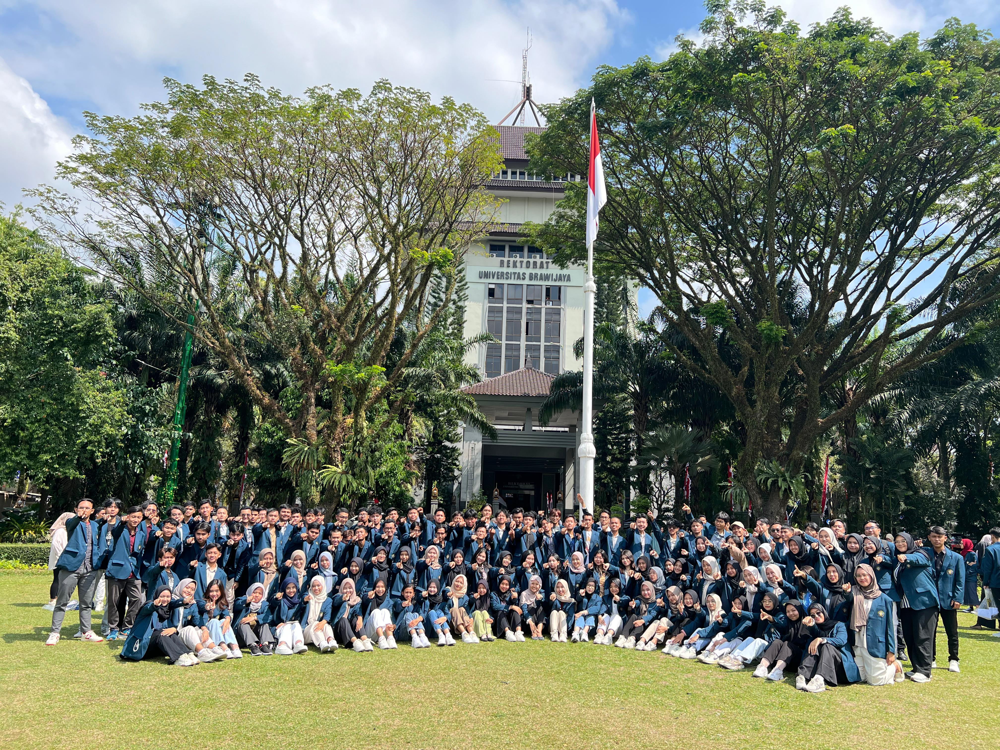
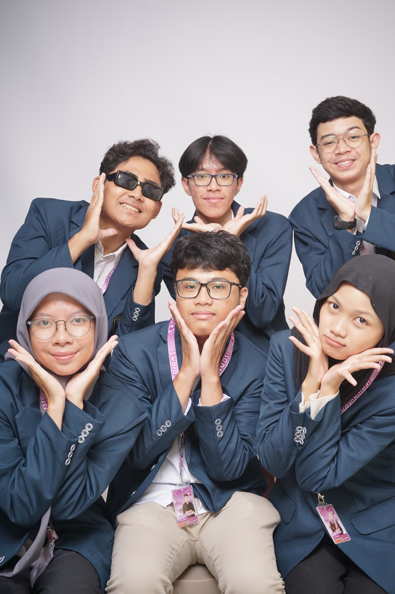
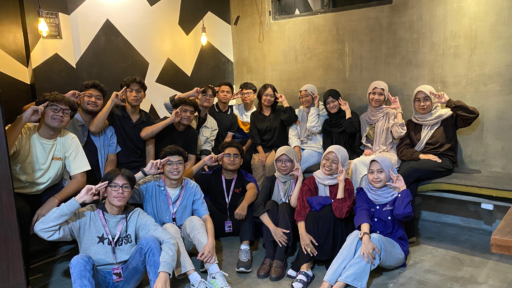
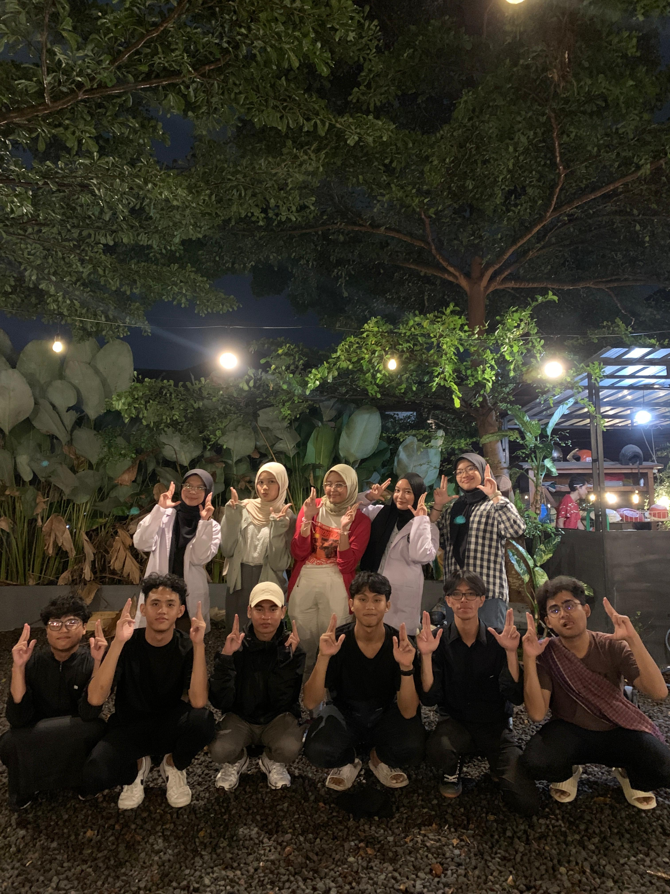
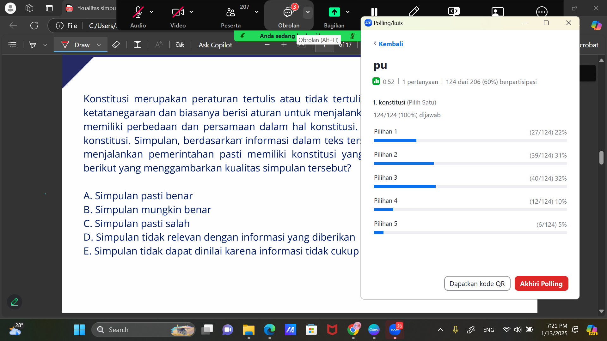

"The only way to do great work is to love what you do."
- Steve Jobs
August 2024 - Present
| Activity | Description |
|---|---|
|  | First meeting with friends from the computer science faculty |
|  | Memorable photos with KBMDSI young staff |
|  | Work program at KBMDSI "Sinau Bareng" |
|  | First gathering as expert staff of the Keilmuan dan Pengajaran (KP) department of KBMDSI |
|  | Teaching 200+ students in one live class |
| Before the milestones and achievements, this is where I took my first steps towards my dreams |